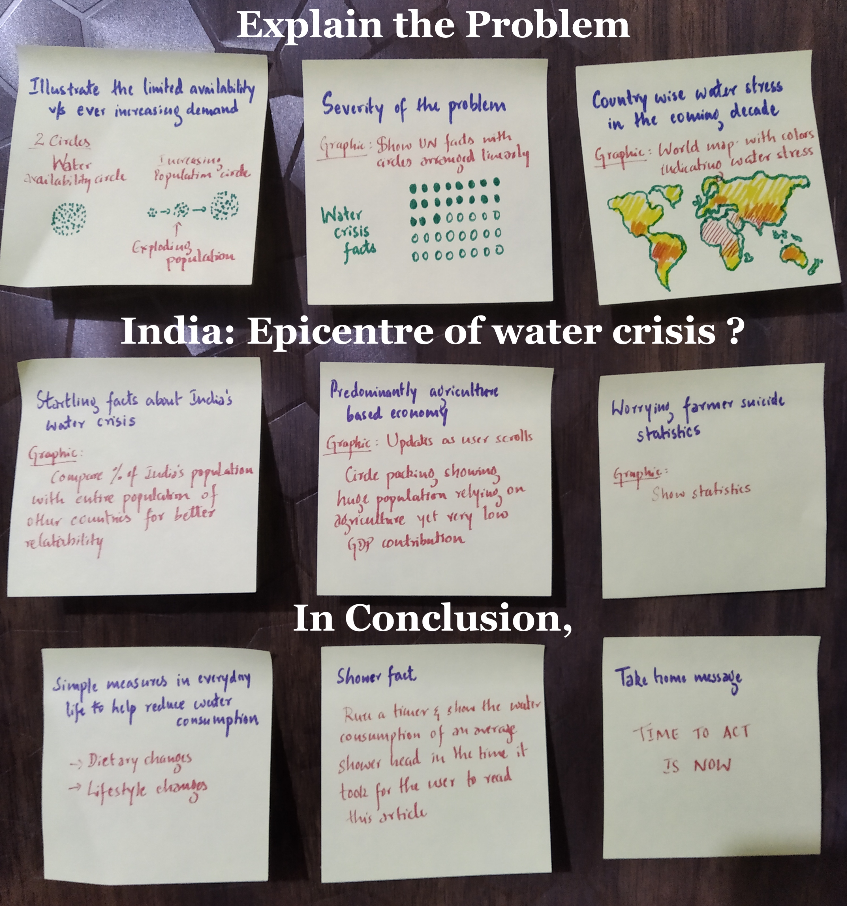

Every drop counts: let us save water.
November 2018
It is well known fact that water scarcity is one of the most concerning risks in the coming years. But do we really understand the magnitude of the problem on hand ? How far into the future are we talking about ? How many people will get affected by this ? A look into the numbers and the projections are outright disastrous. To make matters worse, the countries which are affected the most are all developing/under-developing. As a result, there are hardly any attempt to This is an attempt to make people aware of the truly devastating future we are heading into and what we all can do today in order to leave this planet in a better place for the next generation.

Scrollytelling frameworks: Scrollama vs graph-scroll.js vs ScrollMagic
This project uses user’s scrolling position to determine what graphic needs to be shown on the right of screen. There are several ways to do this. It took several trial and errors before deciding on to use Russell Goldenberg’s Scrollama to accomplish this. While most of the other frameworks allows updating graphics discretely based on the step (text box), Scrollama lets graphic to be updated continuously even while transitioning from one step to another. This made it possible to update the exploding population circles as the user scrolls down.
World water stress graphic: Mapbox vs d3
While both map box and d3js were tried to show the world map graphic, in order to maintain uniformity with other graphics which were all in d3js, it was decided to use d3js’s geojson feature to show the water stress levels of various countries using different shades of colours.
The number of lives of children lost every year to water borne diseases and the number of people lacking proper sanitation facilities are staggering. Lack of attention by Governments on these matters is truly disturbing. Lot more Initiatives such as Gates and Melinda Foundation’s work in India and sub-Saharan Africa is much needed in the coming years.
The next few decades will be very challenging for Middle Eastern countries with most of the region facing severe water crisis.
But the water crisis will hit the hardest in the densely population regions of India and Bangladesh affecting hundreds of millions of people. Yet very little is being done in order to tackle this critical issue.
To make matters worse, with the view of economic incentives these Governments have welcomed manufacturing facilities of major global especially clothing brands leading to further stress on already scarce water resources
India’s use of water for agricultural practices is very inefficient. With agriculture being the highest consumer of water more efficient practices are a must in order to reduce the water stress. The rising number of farmer suicides should be one of the most important factors in shaping Government policies..
It took several attempts to decide on the right graphic to illustrate the limited water availability compared to ever exploding population. After several ideas being scrapped, it was decided to use circles to represent both water and population in two neighbouring packed circles.
Given India’s enormous population, often it is difficult to comprehend statistics like 10% or 50%. In order to make this more relatable, it was decided to compare these numbers with the total populations of different countries across the world. Hopefully this will make readers appreciate better about how dire the water crisis situation is in India.
The project ends with the graphic showing the number of litres of water used by an average shower head in the time it took for a user to read the article. In order to get the time elapsed since page load, Web API’s performance property was used.
Tony Chu's Let's free Congress